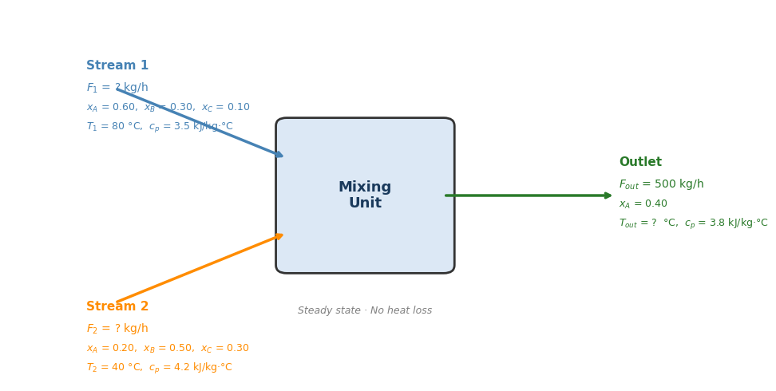

CHME 212 — Midterm Exam 2#
Time allowed: 35 minutes (33 minutes for problem-solving, 2 minutes for submission preparation)
Open notes, closed internet.
Instructions#
Submission: Enter all answers in the provided notebook (Canvas-Files-Exam) and submit it through Gradescope before time is called. Late submissions will not be accepted.
Electronic devices: All personal electronic devices (phones, tablets, smartwatches) are strictly prohibited. Internet access and AI/code assistant tools (ChatGPT, GitHub Copilot, etc.) are strictly prohibited. Any violation will be treated as a violation of academic integrity.
Open notes: You may use printed or handwritten notes only.
Before submitting: Restart the kernel and run all cells to confirm your notebook runs without errors.
Student Information#
name = "" # Your full name
nuid = "" # Your NUID
email = "" # Your UNL email
Part A — Multiple Choice (20 pts, 5 pts each; ⏱ ~4 min, ~1 min each)#
Answer each question by assigning the correct letter in the answer cell below.
Q1#
Which of the following correctly matches each matplotlib method to what it draws?
(A) ax.plot → scatter points, ax.scatter → line, ax.hist → histogram
(B) ax.plot → line, ax.scatter → scatter points, ax.hist → histogram
(C) ax.plot → histogram, ax.scatter → line, ax.hist → scatter points
(D) ax.plot → line, ax.scatter → histogram, ax.hist → scatter points
Solution: (Put your solution here)
Q2#
Which import lets you call linspace(0, 1, 50) without any prefix?
(A) import numpy
(B) import numpy as np
(C) from numpy import linspace
(D) from numpy import numpy.linspace
Solution: (Put your solution here)
Q3#
A project is organized like this:
reactor_tools/
__init__.py
kinetics.py
thermodynamics.py
Which import correctly brings in the kinetics module so you can call kinetics.rate(T) from outside the package?
(A) import kinetics
(B) from reactor_tools import kinetics
(C) import reactor_tools
(D) from kinetics import reactor_tools
Solution: (Put your solution here)
Q4#
import numpy as np
a = np.array([10, 20, 30, 40, 50])
print(a[1:4])
What does this print?
(A) [10 20 30]
(B) [20 30 40]
(C) [20 30 40 50]
(D) [10 20 30 40]
Solution: (Put your solution here)
# Part A — Multiple Choice Answers
A1 = "B" # ax.plot → line, ax.scatter → points, ax.hist → histogram
A2 = "C" # from numpy import linspace → call linspace without prefix
A3 = "B" # from reactor_tools import kinetics → lets you call kinetics.rate(T)
A4 = "B" # a[1:4] → indices 1,2,3 → [20 30 40]
print("Part A answers recorded.")
Part A answers recorded.
Part B — Coding Problems (75 pts)#
Read each problem carefully and fill in the blanks marked with TODO, or complete the code as instructed. Do not modify the pre-provided lines.
Q1 — Numerical Integration & Polynomial Fitting (25 pts; ⏱ ~9 min)#
A steam process requires heating from 400 K to 1000 K. The heat capacity \(C_p\) of steam was measured at seven temperatures:
T_data = np.array([400, 500, 600, 700, 800, 900, 1000]) # K
Cp_data = np.array([34.3, 35.2, 36.3, 37.5, 38.6, 39.7, 40.8]) # J/mol·K
The enthalpy change is \(\Delta H = \displaystyle\int_{400}^{1000} C_p(T)\,dT\).
(Task 1 — 8 pts): Compute \(\Delta H\) in kJ/mol directly from the tabulated data.
(Task 2 — 8 pts): Fit a degree-1 polynomial (linear) to the data.
(Task 3 — 9 pts): Define a Python function Cp_fit(T) that evaluates the polynomial fit, then recompute \(\Delta H\) in kJ/mol from the fitted curve.
import numpy as np
from scipy.integrate import trapezoid, quad
T_data = np.array([400, 500, 600, 700, 800, 900, 1000]) # K
Cp_data = np.array([34.3, 35.2, 36.3, 37.5, 38.6, 39.7, 40.8]) # J/mol·K
# Task 1 — trapezoidal integration on tabulated data
dH_trap = TODO #
print(f"Task 1 ΔH (trapezoid) = {dH_trap:.3f} J/mol")
# Task 2 — polynomial fit
coeffs = TODO #
slope, intercept = coeffs
print(f"\nTask 2 slope = {slope:.5f} J/mol·K²")
print(f" intercept = {intercept:.4f} J/mol·K")
# Task 3 — integrate the fitted polynomial with quad
def Cp_fit(T):
return TODO
dH_quad, _ = TODO
print(f"\nTask 3 ΔH (quad fit) = {dH_quad:.3f} J/mol")
print(f" Difference = {abs(dH_trap - dH_quad):.4f} J/mol")
---------------------------------------------------------------------------
NameError Traceback (most recent call last)
Cell In[3], line 8
5 Cp_data = np.array([34.3, 35.2, 36.3, 37.5, 38.6, 39.7, 40.8]) # J/mol·K
7 # Task 1 — trapezoidal integration on tabulated data
----> 8 dH_trap = TODO #
9 print(f"Task 1 ΔH (trapezoid) = {dH_trap:.3f} J/mol")
11 # Task 2 — polynomial fit
NameError: name 'TODO' is not defined
import numpy as np
from scipy.integrate import trapezoid, quad
T_data = np.array([400, 500, 600, 700, 800, 900, 1000]) # K
Cp_data = np.array([34.3, 35.2, 36.3, 37.5, 38.6, 39.7, 40.8]) # J/mol·K
# Task 1 — trapezoidal integration on tabulated data
dH_trap = trapezoid(Cp_data, T_data)
print(f"Task 1 ΔH (trapezoid) = {dH_trap:.3f} J/mol")
# Task 2 — polynomial fit
coeffs = np.polyfit(T_data, Cp_data, 1)
slope, intercept = coeffs
print(f"\nTask 2 slope = {slope:.5f} J/mol·K²")
print(f" intercept = {intercept:.4f} J/mol·K")
# Task 3 — integrate the fitted polynomial with quad
def Cp_fit(T):
return np.polyval(coeffs, T)
dH_quad, _ = quad(Cp_fit, 400, 1000)
print(f"\nTask 3 ΔH (quad fit) = {dH_quad:.3f} J/mol")
print(f" Difference = {abs(dH_trap - dH_quad):.4f} J/mol")
Task 1 ΔH (trapezoid) = 22485.000 J/mol
Task 2 slope = 0.01100 J/mol·K²
intercept = 29.7857 J/mol·K
Task 3 ΔH (quad fit) = 22491.429 J/mol
Difference = 6.4286 J/mol
Q2 — Monte Carlo Simulation (25 pts; ⏱ ~9 min)#
A shell-and-tube heat exchanger heats a process stream. The outlet temperature is modeled as:
where:
\(T_{in} = 25\,°C\) (fixed inlet temperature)
\(Q = 5000\,\text{W}\) (fixed heat duty)
\(c_p = 4.18\,\text{J g}^{-1}\,°C^{-1}\) (fixed heat capacity of water)
\(\dot{m} \sim \mathcal{N}(100,\;5^2)\,\text{g/s}\) (mass flow rate, normally distributed)
The outlet temperature must be at least 35 °C to meet process requirements.
(Task 1 — 10 pts): Compute \(T_{out}\) at the mean flow rate \(\dot{m} = 100\,\text{g/s}\). Does it meet the spec?
(Task 2 — 15 pts): Sample \(N = 50{,}000\) values of \(\dot{m}\) and compute \(T_{out}\) for each. Then find:
Mean and standard deviation of \(T_{out}\)
Fraction of runs where \(T_{out} < 35\,°C\) (failure rate)
import numpy as np
T_in = 25.0 # °C
Q = 5000.0 # W
cp = 4.18 # J/(g·°C)
spec_T = 35.0 # °C
# Task 1 — nominal outlet temperature at mean flow rate
mdot_mean = 100.0 # g/s
T_nominal = TODO # compute T_out at mdot_mean
print(f"Nominal T_out = {T_nominal:.2f} °C")
print(f"Meets spec? {'YES' if T_nominal >= spec_T else 'NO'}")
# Task 2 — Monte Carlo
N = 50_000
rng = np.random.default_rng(seed=42)
mdot_samples = TODO # sample N values from N(100, 5^2)
T_samples = TODO # compute T_out for each sample
mean_T = TODO # mean of T_samples
std_T = TODO # std of T_samples (ddof=1)
fail_rate = TODO # fraction where T_out < spec_T
print(f"\nMonte Carlo results (N = {N:,}):")
print(f" Mean T_out = {mean_T:.2f} °C")
print(f" Std T_out = {std_T:.2f} °C")
print(f" Failure rate = {fail_rate*100:.2f}%")
import numpy as np
T_in = 25.0 # °C
Q = 5000.0 # W
cp = 4.18 # J/(g·°C)
spec_T = 35.0 # °C
# Task 1 — nominal outlet temperature at mean flow rate
mdot_mean = 100.0 # g/s
T_nominal = T_in + Q / (mdot_mean * cp)
print(f"Nominal T_out = {T_nominal:.2f} °C")
print(f"Meets spec? {'YES' if T_nominal >= spec_T else 'NO'}")
# Task 2 — Monte Carlo
N = 50_000
rng = np.random.default_rng(seed=42)
mdot_samples = rng.normal(loc=100.0, scale=5.0, size=N)
T_samples = T_in + Q / (mdot_samples * cp)
mean_T = np.mean(T_samples)
std_T = np.std(T_samples, ddof=1)
fail_rate = np.mean(T_samples < spec_T)
print(f"\nMonte Carlo results (N = {N:,}):")
print(f" Mean T_out = {mean_T:.2f} °C")
print(f" Std T_out = {std_T:.2f} °C")
print(f" Failure rate = {fail_rate*100:.2f}%")
Nominal T_out = 36.96 °C
Meets spec? YES
Monte Carlo results (N = 50,000):
Mean T_out = 36.99 °C
Std T_out = 0.61 °C
Failure rate = 0.01%
Q3 — Heat & Mass Balance (25 pts; ⏱ ~15 min)#
A mixing unit combines two feed streams and produces a single outlet stream. Each stream carries three components (A, B, C) and has its own temperature.
Stream data:
Stream 1 |
Stream 2 |
Outlet |
|
|---|---|---|---|
Total flow (kg/h) |
\(F_1\) |
\(F_2\) |
500 |
Mass fraction A |
0.60 |
0.20 |
0.40 |
Mass fraction B |
0.30 |
0.50 |
— |
Mass fraction C |
0.10 |
0.30 |
— |
Temperature (°C) |
80 |
40 |
\(T_{out}\) |
\(c_p\) (kJ/kg·°C) |
3.5 |
4.2 |
3.8 |
The mixer operates at steady state with no heat loss to the surroundings.
(Task 1 — 10 pts): Set up and solve the 2×2 linear system for \(F_1\) and \(F_2\) using the total mass balance and component A balance. Use np.linalg.solve.
(Task 2 — 15 pts): Write an energy balance for the mixer and compute the outlet temperature \(T_{out}\). Think about what “steady state, no heat loss” implies: all the thermal energy carried in by the feed streams must equal the thermal energy carried out by the outlet stream. Each stream’s thermal energy rate is proportional to its flow rate, heat capacity, and temperature.
Run this code for visualization!
import matplotlib.pyplot as plt
import matplotlib.patches as mpatches
from matplotlib.patches import FancyArrowPatch
fig, ax = plt.subplots(figsize=(10, 5))
ax.set_xlim(0, 10)
ax.set_ylim(0, 7)
ax.axis('off')
# --- Mixer box ---
box = mpatches.FancyBboxPatch((3.9, 2.2), 2.2, 2.6,
boxstyle="round,pad=0.15",
linewidth=2, edgecolor='#333333',
facecolor='#dce8f5')
ax.add_patch(box)
ax.text(5.0, 3.5, 'Mixing\nUnit', ha='center', va='center',
fontsize=13, fontweight='bold', color='#1a3a5c')
# --- Stream 1 arrow (top-left → mixer) ---
ax.annotate('', xy=(3.9, 4.2), xytext=(1.5, 5.5),
arrowprops=dict(arrowstyle='->', color='steelblue', lw=2.5))
ax.text(1.1, 5.85, 'Stream 1', fontsize=11, fontweight='bold', color='steelblue')
ax.text(1.1, 5.45, '$F_1$ = ? kg/h', fontsize=10, color='steelblue')
ax.text(1.1, 5.08, '$x_A$ = 0.60, $x_B$ = 0.30, $x_C$ = 0.10', fontsize=9, color='steelblue')
ax.text(1.1, 4.72, '$T_1$ = 80 °C, $c_p$ = 3.5 kJ/kg·°C', fontsize=9, color='steelblue')
# --- Stream 2 arrow (bottom-left → mixer) ---
ax.annotate('', xy=(3.9, 2.8), xytext=(1.5, 1.5),
arrowprops=dict(arrowstyle='->', color='darkorange', lw=2.5))
ax.text(1.1, 1.35, 'Stream 2', fontsize=11, fontweight='bold', color='darkorange')
ax.text(1.1, 0.95, '$F_2$ = ? kg/h', fontsize=10, color='darkorange')
ax.text(1.1, 0.58, '$x_A$ = 0.20, $x_B$ = 0.50, $x_C$ = 0.30', fontsize=9, color='darkorange')
ax.text(1.1, 0.22, '$T_2$ = 40 °C, $c_p$ = 4.2 kJ/kg·°C', fontsize=9, color='darkorange')
# --- Outlet arrow (mixer → right) ---
ax.annotate('', xy=(8.5, 3.5), xytext=(6.1, 3.5),
arrowprops=dict(arrowstyle='->', color='#2a7a2a', lw=2.5))
ax.text(8.55, 4.05, 'Outlet', fontsize=11, fontweight='bold', color='#2a7a2a')
ax.text(8.55, 3.65, '$F_{out}$ = 500 kg/h', fontsize=10, color='#2a7a2a')
ax.text(8.55, 3.28, '$x_A$ = 0.40', fontsize=9, color='#2a7a2a')
ax.text(8.55, 2.92, '$T_{out}$ = ? °C, $c_p$ = 3.8 kJ/kg·°C', fontsize=9, color='#2a7a2a')
# --- Steady-state / adiabatic label ---
ax.text(5.0, 1.3, 'Steady state · No heat loss', ha='center', fontsize=9,
color='gray', style='italic')
plt.tight_layout()
plt.show()

import numpy as np
# Known stream properties
F_out = 500.0 # kg/h
xA_out = 0.40 # outlet mass fraction of A
cp1, T1 = 3.5, 80.0 # kJ/(kg·°C), °C
cp2, T2 = 4.2, 40.0
cp_out = 3.8 # kJ/(kg·°C)
# Task 1 — solve 2×2 system for F1 and F2
# Build the system of equations from mass and component balances
# Construction of A and b is the key step here (A@b = constants)
# Then solve for F1 and F2
print(f"F1 = {F1:.2f} kg/h")
print(f"F2 = {F2:.2f} kg/h")
print(f"Check: F1 + F2 = {F1+F2:.2f} kg/h (expected {F_out})")
# Task 2 — outlet temperature from energy balance
# Derive the energy balance equation and solve for T_out
print(f"\nOutlet temperature T_out = {T_out:.2f} °C")
import numpy as np
# Known stream properties
F_out = 500.0 # kg/h
xA_out = 0.40 # outlet mass fraction of A
cp1, T1 = 3.5, 80.0 # kJ/(kg·°C), °C
cp2, T2 = 4.2, 40.0
cp_out = 3.8 # kJ/(kg·°C)
# Task 1 — solve 2×2 system for F1 and F2
A = np.array([[1.0, 1.0 ],
[0.60, 0.20]])
b = np.array([F_out, xA_out * F_out]) # [500, 200]
F1, F2 = np.linalg.solve(A, b)
print(f"F1 = {F1:.2f} kg/h")
print(f"F2 = {F2:.2f} kg/h")
print(f"Check: F1 + F2 = {F1+F2:.2f} kg/h (expected {F_out})")
# Task 2 — outlet temperature from energy balance
T_out = (F1 * cp1 * T1 + F2 * cp2 * T2) / (F_out * cp_out)
print(f"\nOutlet temperature T_out = {T_out:.2f} °C")
F1 = 250.00 kg/h
F2 = 250.00 kg/h
Check: F1 + F2 = 500.00 kg/h (expected 500.0)
Outlet temperature T_out = 58.95 °C
If F1 increases while F2 stays the same, more of the hotter stream (80 °C)
enters the mixer relative to the cooler stream (40 °C), so T_out rises.
The outlet temperature is a flow-weighted average, and a larger weight on
the higher-temperature stream pushes it upward.